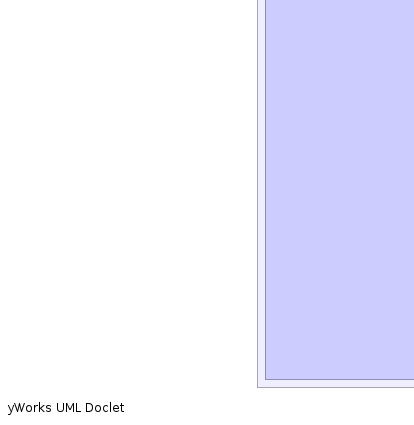

- java.lang.Object
-
- uk.ac.ed.epcc.webapp.charts.Chart
-
- uk.ac.ed.epcc.webapp.charts.PeriodChart<P>
-
- Type Parameters:
P- Type of Plot
- All Implemented Interfaces:
- Contexed
- Direct Known Subclasses:
- SetPeriodChart, TimeChart
public abstract class PeriodChart<P extends PeriodPlot> extends Chart
PeriodChart is aChartwhere the data represents a plot over some period of time. Various PlotStrategies are provided to map the data onto time periods.- Author:
- spb
- See Also:
PieTimeChart-


 
-
-
Constructor Summary
Constructors Modifier Constructor and Description protectedPeriodChart(AppContext c)protectedPeriodChart(AppContext c, TimePeriod p)
-
Method Summary
Methods Modifier and Type Method and Description protected <D> voidaddData(P ds, SetRangeMapper<D> t, D object)Basic method for mapping an object into a Plot Keep this as a method on Chart not Plot as this prevents us needing to subclass Plot for Pie and Time Charts<D> voidaddDataArray(P ds, SetRangeMapper<D> t, D[] o)add data from a set of objects using strategy transform<D> voidaddDataIterator(P ds, SetRangeMapper<D> t, java.util.Iterator<D> i)Add data from an Iterator over objects using a strategy transform.<F> booleanaddMapData(P ps, QueryMapper<F> t, F fac)Populate chart using a QueryMapper and a factoryPeriodChartData<P>getChartData()java.util.DategetEndDate()TimePeriodgetPeriod()java.util.DategetStartDate()abstract TablegetTable()Generate a table representing the Chart-
Methods inherited from class uk.ac.ed.epcc.webapp.charts.Chart
getContext, getLegendName, makeDataset, setChartData, setLegendName, sortSets, sortSets, sortSets
-
-
-
-
Constructor Detail
-
PeriodChart
protected PeriodChart(AppContext c)
-
PeriodChart
protected PeriodChart(AppContext c, TimePeriod p)
-
-
Method Detail
-
addData
protected final <D> void addData(P ds, SetRangeMapper<D> t, D object) throws InvalidTransformException
Basic method for mapping an object into a Plot Keep this as a method on Chart not Plot as this prevents us needing to subclass Plot for Pie and Time Charts- Throws:
InvalidTransformException- Parameters:
ds-t-object-
-
addMapData
public final <F> boolean addMapData(P ps, QueryMapper<F> t, F fac) throws InvalidTransformException
Populate chart using a QueryMapper and a factory- Throws:
InvalidTransformException- Type Parameters:
F- type of factory- Parameters:
ps- Plot to add data tot- QueryMapper to usefac- Factory to query- Returns:
- true if data added
-
addDataIterator
public final <D> void addDataIterator(P ds, SetRangeMapper<D> t, java.util.Iterator<D> i) throws InvalidTransformException
Add data from an Iterator over objects using a strategy transform.- Throws:
InvalidTransformException- Type Parameters:
D- type of object being added- Parameters:
ds-t-i-
-
addDataArray
public final <D> void addDataArray(P ds, SetRangeMapper<D> t, D[] o) throws InvalidTransformException
add data from a set of objects using strategy transform- Throws:
InvalidTransformException- Type Parameters:
D- type of object being added- Parameters:
ds-t-o-
-
getChartData
public PeriodChartData<P> getChartData()
- Overrides:
getChartDatain classChart
-
getPeriod
public final TimePeriod getPeriod()
-
getStartDate
public java.util.Date getStartDate()
-
getEndDate
public java.util.Date getEndDate()
-
getTable
public abstract Table getTable()
Generate a table representing the Chart- Returns:
- a Table
-
-